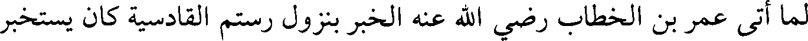
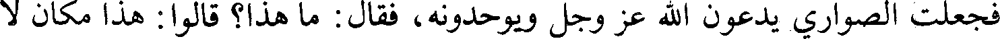
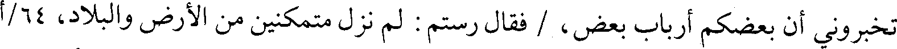
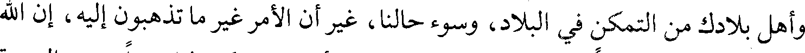
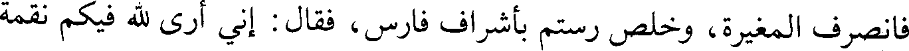
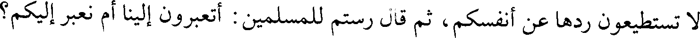

File: 000828.gt.txt (if the image is defective, simply delete all Arabic text and the line will be excluded)

سعيد، قال :
File: 000829.gt.txt (if the image is defective, simply delete all Arabic text and the line will be excluded)

لما أتى عمر بن الخطاب رضي الله عنه الخبر بنزول رستم القادسية كان يستخبر
File: 000832.gt.txt (if the image is defective, simply delete all Arabic text and the line will be excluded)

فاستأذنت على رسول الله فدخلت فأخبرت رسول الله صلعم بقدوم عكرمة، فاستبشر ووثب
File: 000833.gt.txt (if the image is defective, simply delete all Arabic text and the line will be excluded)

قائما على رجليه وما على رسول الله صلعم رداء فرحا بعكرمة، وقال : أدخليه، فدخل،
File: 000834.gt.txt (if the image is defective, simply delete all Arabic text and the line will be excluded)

فقال : يا محمد، إن هذه أخبرتني أنك أمنتني، فقال رسول الله صلعم : «صدقت وأنت
File: 000835.gt.txt (if the image is defective, simply delete all Arabic text and the line will be excluded)

آمن»، قال عكرمة : فقلت أشهد أن لا إله إلا الله وحده لا شريك له، وأنك عبده ورسوله،
File: 000836.gt.txt (if the image is defective, simply delete all Arabic text and the line will be excluded)

وقلت : أنت أبر الناس، وأصدق الناس، وأوفى الناس، أقول ذلك و أني لمطأطئ الرأس
File: 000837.gt.txt (if the image is defective, simply delete all Arabic text and the line will be excluded)

استحياء منه؛ ثم قلت : يا رسول الله، استغفر لي كل عداوة عاديتكها أو مركب أوضعت
File: 000838.gt.txt (if the image is defective, simply delete all Arabic text and the line will be excluded)

فيه أريد به إظهار الشرك، فقال رسول الله صلعم : «اللهم اغفر لعكرمة كل عداوة
File: 000839.gt.txt (if the image is defective, simply delete all Arabic text and the line will be excluded)

58/أ عادانيها، أو نطق بها أو مركب أوضع فيه / يريد أن يصد عن سبيلك»، فقلت : يا
File: 000840.gt.txt (if the image is defective, simply delete all Arabic text and the line will be excluded)

رسول الله، مرني بخير ما تعلم فأعمله، قال : «قل أشهد أن لا إله إلا الله، وأن محمدا
File: 000841.gt.txt (if the image is defective, simply delete all Arabic text and the line will be excluded)

عبده ورسوله، وجاهد في سبيله» ثم قال عكرمة : أما والله يا رسول الله لا أدع نفقة كنت
File: 000842.gt.txt (if the image is defective, simply delete all Arabic text and the line will be excluded)

أنفقتها في صد عن سبيل الله إلا أنفقت ضعفها في سبيل الله ولا قتالا كنت أقاتل في صد
File: 000843.gt.txt (if the image is defective, simply delete all Arabic text and the line will be excluded)

عن سبيل الله إلا أبليت ضعفه في سبيل الله ثم اجتهد في القتال حتى قتل شهيدا يوم
File: 000844.gt.txt (if the image is defective, simply delete all Arabic text and the line will be excluded)

أجنادين في خلافة أبي بكر الصديق، وكان رسول الله صلعم استعمله عام حج على هوازن
File: 000845.gt.txt (if the image is defective, simply delete all Arabic text and the line will be excluded)

[قال محمد بن سعد : وأخبرنا عارم بن الفضل، قال : حدثنا حماد بن زيد، عن
File: 000846.gt.txt (if the image is defective, simply delete all Arabic text and the line will be excluded)

أيوب](1)، عن ابن أبي مليكة، قال :
File: 000847.gt.txt (if the image is defective, simply delete all Arabic text and the line will be excluded)

لما كان يوم الفتح ركب عكرمة بن أبي جهل البحر هاربا يجب بهم البحر،
File: 000848.gt.txt (if the image is defective, simply delete all Arabic text and the line will be excluded)

فجعلت الصواري يدعون الله عز وجل ويوحدونه، فقال : ما هذا؟ قالوا : هذا مكان لا
File: 000849.gt.txt (if the image is defective, simply delete all Arabic text and the line will be excluded)

ينفع فيه إلا الله عز وجل، قال : فهذا إله محمد الذي يدعونا إليه، فارجعوا بنا، فرجع
File: 000850.gt.txt (if the image is defective, simply delete all Arabic text and the line will be excluded)

فأسلم. وكانت امرأته أسلمت قبله وكانا على نكاحهما.
File: 000851.gt.txt (if the image is defective, simply delete all Arabic text and the line will be excluded)

[قال ابن سعد : وأخبرنا موسى بن مسعود أبو حذيفة النهدي، قال : حدثنا
File: 000852.gt.txt (if the image is defective, simply delete all Arabic text and the line will be excluded)

سفيان، عن أبي إسحاق، عن مصعب بن سعد][2]، عن عكرمة بن أبي جهل، قال :
File: 000853.gt.txt (if the image is defective, simply delete all Arabic text and the line will be excluded)

قال لي النبي صلعم يوم جئته : «مرحبا بالراكب المهاجر، مرحبا بالراكب
File: 000854.gt.txt (if the image is defective, simply delete all Arabic text and the line will be excluded)

169
File: 000855.gt.txt (if the image is defective, simply delete all Arabic text and the line will be excluded)

فجاء حتى جلس مع رستم على سريره فترتروه(1) وأنزلوه ومغثوه(2)، فقال : كانت تبلغنا
File: 000856.gt.txt (if the image is defective, simply delete all Arabic text and the line will be excluded)

عنكم الأحلام، ولا أرى قوما أسفه منكم، إنا معشر العرب [سواء](3)، لا يستعبد بعضنا
File: 000857.gt.txt (if the image is defective, simply delete all Arabic text and the line will be excluded)

بعضا، فظننت أنكم تواسون قومكم كما نتواسى؛ وكان أحسن من الذي صنعتم أن
File: 000858.gt.txt (if the image is defective, simply delete all Arabic text and the line will be excluded)

تخبروني أن بعضكم أرباب بعض، / فقال رستم : لم نزل متمكنين من الأرض والبلاد، 64/أ
File: 000859.gt.txt (if the image is defective, simply delete all Arabic text and the line will be excluded)

ظاهرين على الأعداء، ننصر على الناس، ولا ينصرون علينا، ولم يكن في الناس أمة
File: 000860.gt.txt (if the image is defective, simply delete all Arabic text and the line will be excluded)

أصغر عندنا أمرا منكم، ولا نراكم شيئا ولا نعدكم، وكنتم إذا قحطت أرضكم استعنتم
File: 000861.gt.txt (if the image is defective, simply delete all Arabic text and the line will be excluded)

بأرضنا، فنأمر لكم بالشيء من التمر والشعير، ثم نردكم، وقد علمت أنه لم يحملكم
File: 000862.gt.txt (if the image is defective, simply delete all Arabic text and the line will be excluded)

على ما صنعتم إلا ما أصابكم من الجهد في بلادكم، فأنا آمر لأميركم بكسوة وبغل وألف
File: 000863.gt.txt (if the image is defective, simply delete all Arabic text and the line will be excluded)

درهم، وآمر لكل رجل منكم بوقرتي(4) تمر وثوبين، وتنصرفون عنا، فإني لست أشتهي أن
File: 000864.gt.txt (if the image is defective, simply delete all Arabic text and the line will be excluded)

أقتلكم ولاآسركم.
File: 000865.gt.txt (if the image is defective, simply delete all Arabic text and the line will be excluded)

فتكلم المغيرة(5)، فحمد الله وأثنى عليه، وقال : لسنا ننكر ما وصفت به نفسك
File: 000866.gt.txt (if the image is defective, simply delete all Arabic text and the line will be excluded)

وأهل بلادك من التمكن في البلاد، وسوء حالنا، غير أن الأمر غير ما تذهبون إليه، إن الله
File: 000867.gt.txt (if the image is defective, simply delete all Arabic text and the line will be excluded)

تعالى بعث فينا رسولا فذكر نحو كلام ربعي إلى أن قال : فكن لنا عبدا تؤدي الجزية
File: 000868.gt.txt (if the image is defective, simply delete all Arabic text and the line will be excluded)

وأنت صاغر، وإلا السيف إن أبيت، فنخر نخرة، واستشاط غضبا، ثم حلف بالشمس : لا
File: 000869.gt.txt (if the image is defective, simply delete all Arabic text and the line will be excluded)

يرتفع الضحى غدا حتى أقتلكم أجمعين.
File: 000870.gt.txt (if the image is defective, simply delete all Arabic text and the line will be excluded)

فانصرف المغيرة، وخلص رستم بأشراف فارس، فقال : إني أرى لله فيكم نقمة
File: 000871.gt.txt (if the image is defective, simply delete all Arabic text and the line will be excluded)

لا تستطيعون ردها عن أنفسكم، ثم قال رستم للمسلمين : أتعبرون إلينا أم نعبر إليكم؟
File: 000872.gt.txt (if the image is defective, simply delete all Arabic text and the line will be excluded)

فقالوا : لا بل اعبر إلينا، فأرسل سعد إلى الناس أن يقفوا مواقفهم، فأراد المشركون
File: 000873.gt.txt (if the image is defective, simply delete all Arabic text and the line will be excluded)

العبور على القنطرة، فأرسل إليهم سعد ولا كرامة، متى قد غلبناكم عليها لن نردها عليكم؛
File: 000874.gt.txt (if the image is defective, simply delete all Arabic text and the line will be excluded)

تكلفوا معبرا غير القناطر، فباتوا يسكرون العتيق والقصب حتى الصباح بأمتعتهم،(6)
File: 000875.gt.txt (if the image is defective, simply delete all Arabic text and the line will be excluded)

فجعلوه طريقا.
File: 000877.gt.txt (if the image is defective, simply delete all Arabic text and the line will be excluded)

أخبرنا علي بن محمد بن عبد الله المعدل، قال : أخبرنا الحسين بن صفوان البرذعي،
File: 000878.gt.txt (if the image is defective, simply delete all Arabic text and the line will be excluded)

قال : حدثنا عبد الله بن محمد بن أبي الدنيا، قال : حدثنا عبد الرحمن بن صالح،
File: 000879.gt.txt (if the image is defective, simply delete all Arabic text and the line will be excluded)

قال](1): أبو بكر بن عياش :
File: 000880.gt.txt (if the image is defective, simply delete all Arabic text and the line will be excluded)

لما خرج علي بن أبي طالب إلى صفين؛ مر بخراب، فتمثل رجل من أصحابه :